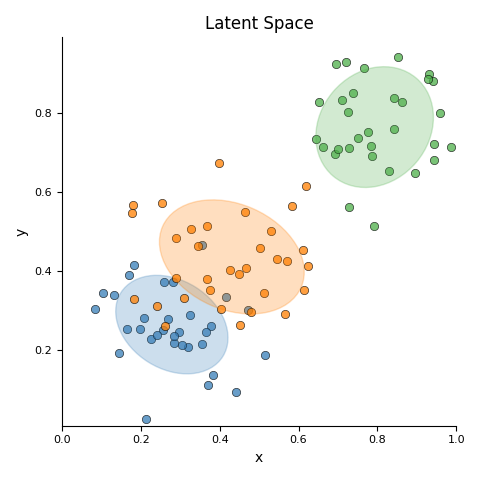
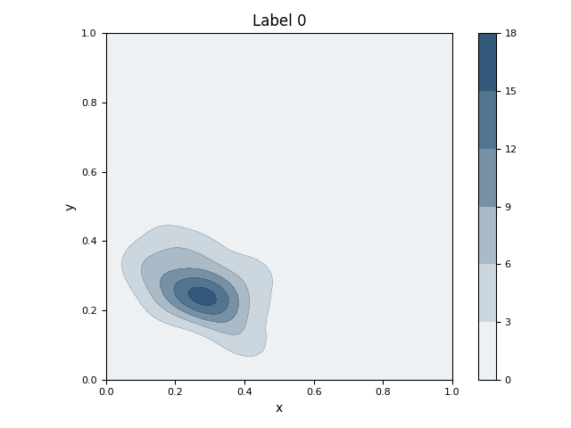

Note
Click here to download the full example code
Main 04 - Plot GMM and KDE
This example estimates and displays the Gaussian Mixture Model (GMM) and KDE (Kernel Density Estimation) for each class.
- 
- 
10 # https://jakevdp.github.io/PythonDataScienceHandbook/04.05-histograms-and-binnings.html
11
12 # Libraries
13 import numpy as np
14 import pandas as pd
15 import matplotlib as mpl
16 import matplotlib.pyplot as plt
17
18 # Specific
19 from scipy import linalg
20 from sklearn import mixture
21 from sklearn.datasets import make_blobs
22 from sklearn.preprocessing import MinMaxScaler
23 from scipy.stats import gaussian_kde
24 from matplotlib.colors import LinearSegmentedColormap
25
26 # Latexify
27 mpl.rc('font', size=10)
28 mpl.rc('legend', fontsize=6)
29 mpl.rc('xtick', labelsize=8)
30 mpl.rc('ytick', labelsize=8)
31
32
33 # -----------------------------------------
34 # Methods
35 # -----------------------------------------
36 def make_colormap(seq):
37 """Return a LinearSegmentedColormap
38
39 Parameters
40 ----------
41 seq: list
42 A sequence of floats and RGB-tuples. The floats
43 should be increasing and in the interval (0,1).
44 """
45 # Library
46 import matplotlib.colors as mcolors
47 # Code
48 seq = [(None,) * 3, 0.0] + list(seq) + [1.0, (None,) * 3]
49 cdict = {'red': [], 'green': [], 'blue': []}
50 for i, item in enumerate(seq):
51 if isinstance(item, float):
52 r1, g1, b1 = seq[i - 1]
53 r2, g2, b2 = seq[i + 1]
54 cdict['red'].append([item, r1, r2])
55 cdict['green'].append([item, g1, g2])
56 cdict['blue'].append([item, b1, b2])
57 return mcolors.LinearSegmentedColormap('CustomMap', cdict)
58
59 def adjust_lightness(color, amount=0.5):
60 """Adjusts the lightness of a color
61
62 Parameters
63 ----------
64 color: string or vector
65 The color in string, hex or rgb format.
66
67 amount: float
68 Lower values result in dark colors.
69 """
70 # Libraries
71 import matplotlib.colors as mc
72 import colorsys
73 try:
74 c = mc.cnames[color]
75 except:
76 c = color
77 c = colorsys.rgb_to_hls(*mc.to_rgb(c))
78 return colorsys.hls_to_rgb(c[0], \
79 max(0, min(1, amount * c[1])), c[2])
80
81 def kde_mpl_compute(x, y, xlim=None, ylim=None, **kwargs):
82 """Computes the gaussian kde.
83
84 Parameters
85 ----------
86
87 Returns
88 -------
89 """
90 try:
91 # Plot density
92 kde = gaussian_kde(np.vstack((x, y)), **kwargs)
93 except Exception as e:
94 print("Exception! %s" % e)
95 return None, None, None
96
97 # Parameters
98 xmin, xmax = min(x), max(x)
99 ymin, ymax = min(y), max(y)
100
101 # Set xlim and ylim
102 if xlim is not None:
103 xmin, xmax = xlim
104 if ylim is not None:
105 ymin, ymax = ylim
106
107 # evaluate on a regular grid
108 xgrid = np.linspace(xmin, xmax, 100)
109 ygrid = np.linspace(ymin, ymax, 100)
110 Xgrid, Ygrid = np.meshgrid(xgrid, ygrid)
111 zgrid = kde.evaluate(np.vstack([
112 Xgrid.ravel(),
113 Ygrid.ravel()
114 ]))
115 Zgrid = zgrid.reshape(Xgrid.shape)
116
117 # Return
118 return xgrid, ygrid, Zgrid
119
120 def plot_ellipses(gmm, ax, color, n=None):
121 """Plot ellipses from GaussianMixtureModel"""
122
123 # Define color
124 if color is None:
125 color = 'blue'
126 if n is None:
127 n = 1
128
129 # Get covariances
130 if gmm.covariance_type == 'full':
131 covariances = gmm.covariances_[n][:2, :2]
132 elif gmm.covariance_type == 'tied':
133 covariances = gmm.covariances_[:2, :2]
134 elif gmm.covariance_type == 'diag':
135 covariances = np.diag(gmm.covariances_[n][:2])
136 elif gmm.covariance_type == 'spherical':
137 covariances = np.eye(gmm.means_.shape[1]) * gmm.covariances_[n]
138
139 # Compute
140 v, w = np.linalg.eigh(covariances)
141 # v = 2. * np.sqrt(2.) * np.sqrt(v) # Oliver
142 u = w[0] / np.linalg.norm(w[0])
143 angle = np.arctan2(u[1], u[0])
144 angle = 180 * angle / np.pi # convert to degrees
145 v = 2. * np.sqrt(2.) * np.sqrt(v)
146
147 # Plot
148 ell = mpl.patches.Ellipse(gmm.means_[n, :2],
149 v[0], v[1], 180 + angle, color=color)
150 ell.set_clip_box(ax.bbox)
151 ell.set_alpha(0.25)
152 ax.add_artist(ell)
153 ax.set_aspect('equal', 'datalim')
154
155
156 # -----------------------------------------
157 # Create data
158 # -----------------------------------------
159 # Colors
160 colors = ['#377eb8', '#ff7f00', '#4daf4a',
161 '#a65628', '#984ea3',
162 '#999999', '#e41a1c', '#dede00']
163
164 c1 = colors[0]
165 c2 = colors[1]
166 c3 = colors[2]
167
168 # Data
169 data = [
170 [0.19, 0.25, 0, 1, 0, 0, 0],
171 [0.15, 0.21, 0, 1, 0, 0, 0],
172 [0.13, 0.19, 0, 1, 0, 0, 0],
173 [0.16, 0.12, 0, 1, 0, 0, 0],
174 [0.21, 0.14, 0, 1, 0, 0, 0],
175 [0.38, 0.18, 0, 1, 0, 0, 0],
176
177 [0.50, 0.52, 1, 0, 1, 0, 0],
178 [0.40, 0.58, 1, 0, 1, 0, 0],
179 [0.49, 0.72, 1, 0, 1, 0, 0],
180 [0.44, 0.64, 1, 0, 1, 0, 0],
181 [0.60, 0.50, 1, 0, 1, 0, 0],
182 [0.38, 0.81, 1, 0, 1, 0, 0],
183 [0.40, 0.75, 1, 0, 1, 0, 0],
184 [0.47, 0.61, 1, 0, 1, 0, 0],
185 [0.52, 0.65, 1, 0, 1, 0, 0],
186 [0.50, 0.55, 1, 0, 1, 0, 0],
187 [0.46, 0.54, 1, 0, 1, 0, 0],
188 [0.60, 0.50, 1, 0, 1, 0, 0],
189 [0.68, 0.52, 1, 0, 1, 0, 0],
190 [0.61, 0.77, 1, 0, 1, 0, 0],
191 [0.51, 0.79, 1, 0, 1, 0, 1],
192 [0.64, 0.80, 1, 0, 1, 0, 1],
193 [0.54, 0.75, 1, 0, 1, 0, 1],
194 [0.58, 0.81, 1, 0, 1, 0, 1],
195
196 [0.80, 0.82, 2, 0, 0, 1, 1],
197 [0.85, 0.83, 2, 0, 0, 1, 1],
198 [0.90, 0.85, 2, 0, 0, 1, 1],
199 [0.84, 0.80, 2, 0, 0, 1, 1],
200 [0.81, 0.78, 2, 0, 0, 1, 1],
201 [0.92, 0.79, 2, 0, 0, 1, 1],
202 ]
203
204 """
205 # Create DataFrame (manual data)
206 data = pd.DataFrame(data)
207 data.columns = ['x', 'y', 'target',
208 'Label 0', 'Label 1', 'Label 2',
209 'Label 3']
210 """
211
212 # Create bloobs
213 X, y = make_blobs(n_features=2,
214 centers=[[0.35, 0.35],
215 [0.45, 0.45],
216 [0.7, 0.70]],
217 cluster_std=[0.07, 0.10, 0.07])
218
219 # Preprocessing
220 X = MinMaxScaler().fit_transform(X)
221
222 # Create Dataframe
223 data = pd.DataFrame(X, columns=['x', 'y'])
224 data['target'] = y
225 for i in np.unique(y):
226 data['Label %s' % i] = y==i
227 data = data[(data.x>0) & (data.x<1)]
228 data = data[(data.y>0) & (data.y<1)]
229
230 # Create X
231 X = data[['x', 'y']]
232
233 # Create gaussian
234 gmm = mixture.GaussianMixture(
235 n_components=3, covariance_type='full')
236
237 # Since we have class labels for the training data, we can
238 # initialize the GMM parameters in a supervised manner.
239 gmm.means_init = np.array( \
240 [X[data.target == i].mean(axis=0)
241 for i in range(3)])
242
243 # Fit a Gaussian mixture with EM using five components
244 gmm = gmm.fit(data[['x', 'y']])
245
246
247 # -----------------------------------------
248 # Visualisation (
249 # -----------------------------------------
250 # Create figure
251 figure, ax = plt.subplots(1,1, figsize=(4.8, 4.8))
252
253 for i, (c, aux) in enumerate(data.groupby('target')):
254
255 # Plot markers
256 ax.scatter(aux.x, aux.y, c=colors[i],
257 edgecolors='k', alpha=0.75,
258 linewidths=0.5)
259
260 # Plot ellipse
261 plot_ellipses(gmm, ax, color=colors[i], n=i)
262
263 # Configure
264 ax.set(xlabel='x', ylabel='y',
265 aspect='equal',
266 xlim=[0, 1], ylim=[0, 1],
267 title='Latent Space')
268
269 # Hide the right and top spines
270 ax.spines.right.set_visible(False)
271 ax.spines.top.set_visible(False)
272
273 # Adjust
274 plt.tight_layout()
275
276
277 # -----------------------------------------
278 # Visualisation labels
279 # -----------------------------------------
280 # Loop
281 for i, l in enumerate(['Label 0',
282 'Label 1',
283 'Label 2']):
284 # Filter data
285 aux = data[data[l] == 1]
286
287 # Compute KDE
288 xgrid, ygrid, Zgrid = \
289 kde_mpl_compute(aux.x, aux.y,
290 xlim=[0, 1], ylim=[0, 1])
291
292 # Create colormap
293 cmap = LinearSegmentedColormap.from_list("",
294 ['white', adjust_lightness(colors[i], 0.6)], 14)
295
296 # Create figure
297 figure, ax = plt.subplots(1,1)
298
299 # Plot contour
300 ax.contour(xgrid, ygrid, Zgrid,
301 linewidths=0.25, alpha=0.5, levels=5,
302 linestyles='dashed', colors='k')
303 # Plot fill spaces
304 cntr = ax.contourf(xgrid, ygrid, Zgrid,
305 levels=5, cmap=cmap)
306 # Add colorbar
307 cb = plt.colorbar(cntr, ax=ax)
308
309 # Configure
310 ax.set(xlabel='x', ylabel='y',
311 aspect='equal', title=l,
312 xlim=[0, 1], ylim=[0, 1])
313
314 # Adjust
315 plt.tight_layout()
316
317
318 # -----------------------------------------
319 # All together
320 # -----------------------------------------
321
322 # Con
323 plt.show()
Total running time of the script: ( 0 minutes 0.545 seconds)